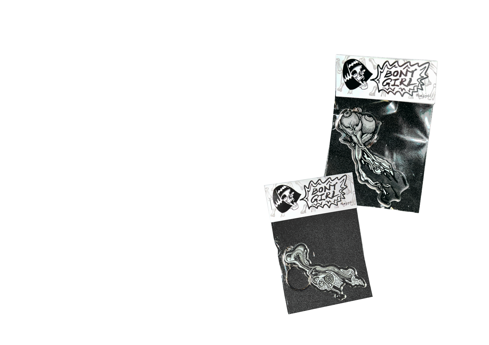

Bony Girl / Personal Brand
BONY
GIRL

A personal brand and product world for Bony Girl. The WordPress shop is still in progress, so store modules are intentionally shown as grey placeholders.
ProjectBony Girl
StatusShop in progress
RoleFounder / Designer
DeliverablesMerchandise, product visuals, brand assets
About
The opportunity
Build a personal brand presence around product graphics, merchandise and small objects while leaving room for the upcoming WordPress store.
Project goals
- Show the existing product and graphic direction.
- Keep unfinished commerce pages visibly marked as in progress.
- Create a page structure that can later accept the live shop content.
Product direction
Merchandise as the brand surface.
Apparel, keychains, stickers and packaging sketches establish the visual character before the online store is finalized.


Objects
Small-format brand pieces.
The product images document how the brand extends across carryable, collectible and wearable formats.


Shop preview
Reserved for the WordPress store.
This area is intentionally grey until the shop pages, product listings and checkout experience are ready to show.
Product grid—WordPress shop module in progress
Product page—Product detail layout in progress
Checkout—Store flow in progress